Itapetininga-SP
Atendimento durante todo o mês, com horário combinado pela DM.
Tatuadora em Itapetininga, com datas em São Paulo. Cybersigilismo, tribal e personagem de anime e game, em preto com toques de vermelho.
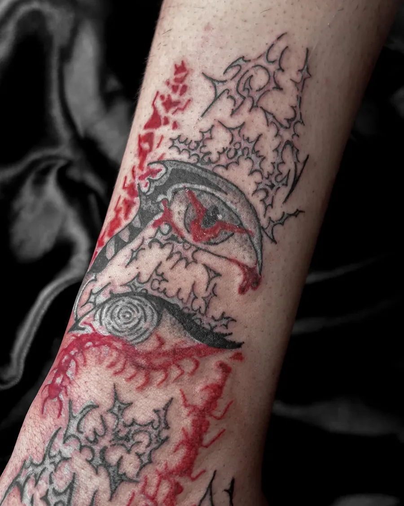
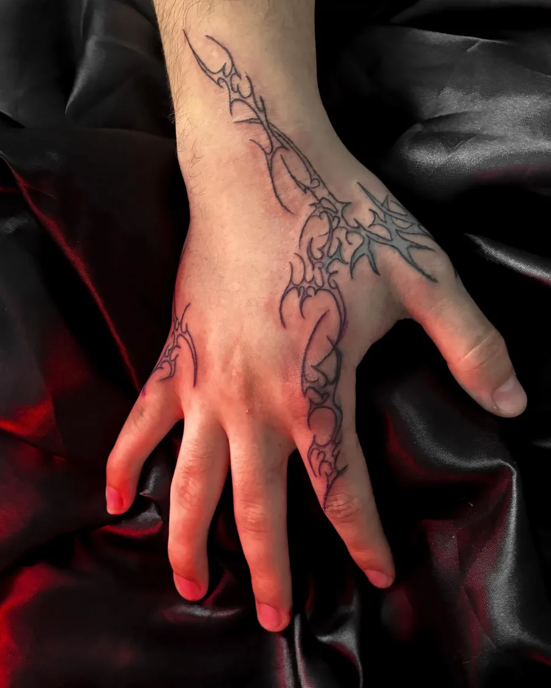
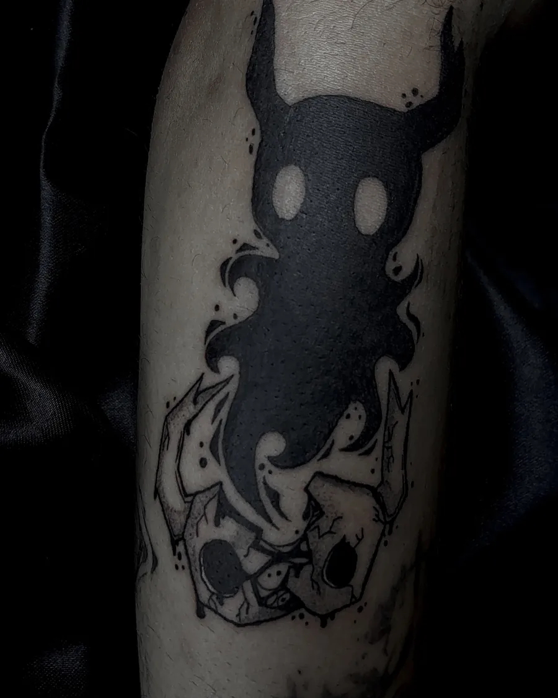
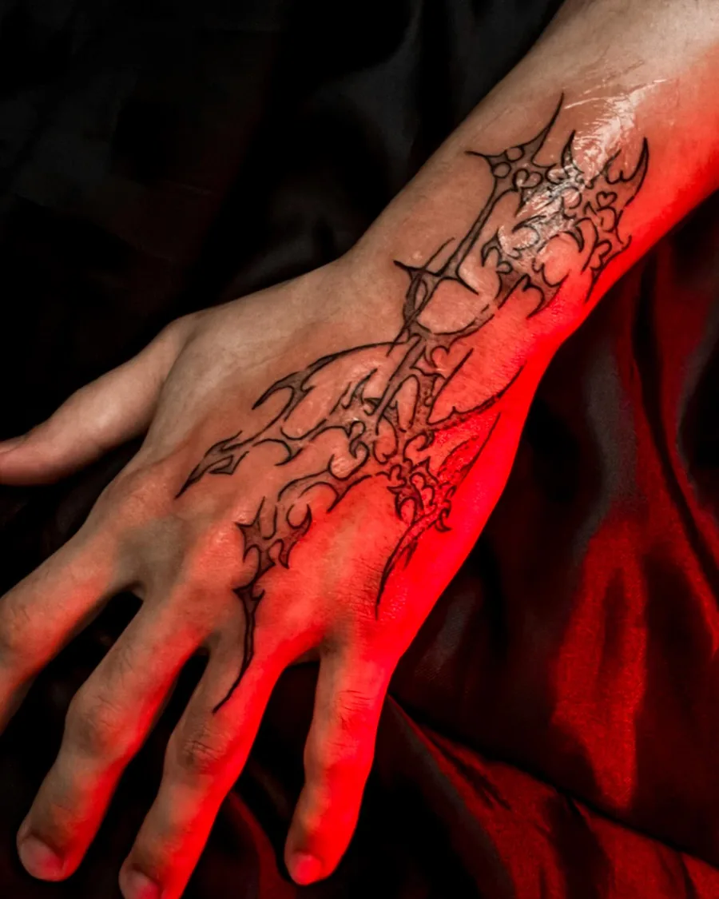
O que mais sai da agulha da Kiu. Dá pra misturar: um personagem com sigilo, um tribal com vermelho.
Traço fino e pontudo que acompanha a mão, o braço e as costas.
Ordem Paranormal, Hollow Knight, JoJo, One Piece, Soul Eater. Fanart ou versão autoral.
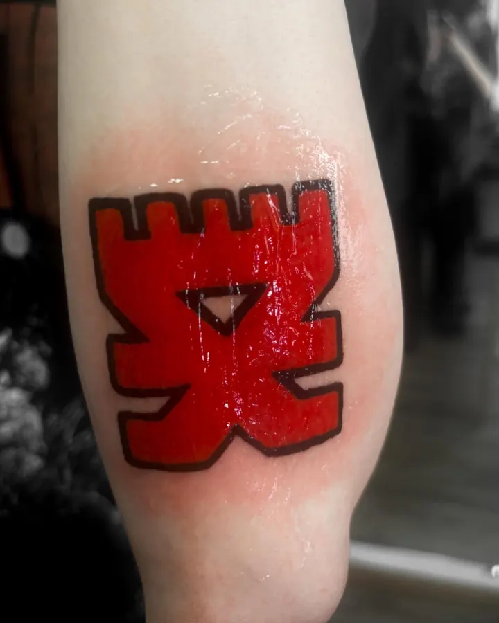
Preenchimento vermelho chapado ou detalhe que sangra no meio do preto.
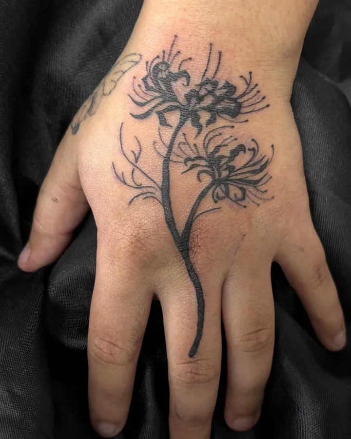
Flores, morceguinhos, brilhos e nomes. Peça pequena também tem vez.
Trabalhos de 2024 a 2026. Toque numa foto pra ver todas as fotos daquela tattoo.
Fotos mandadas pelos clientes depois da cicatrização. É assim que fica no dia a dia.
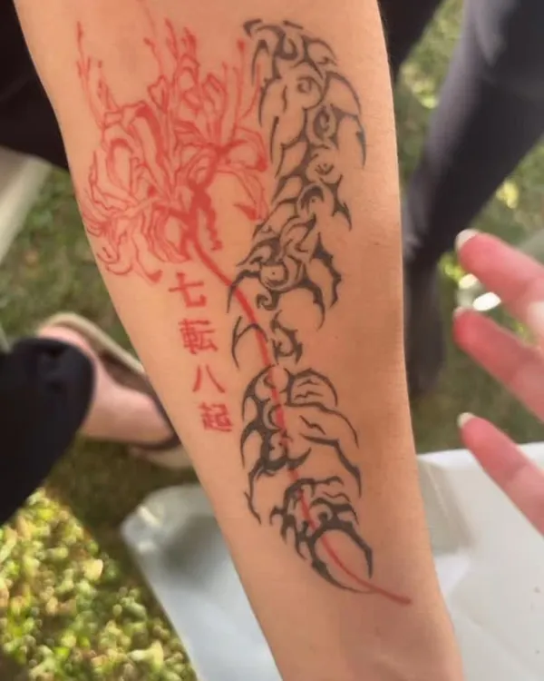
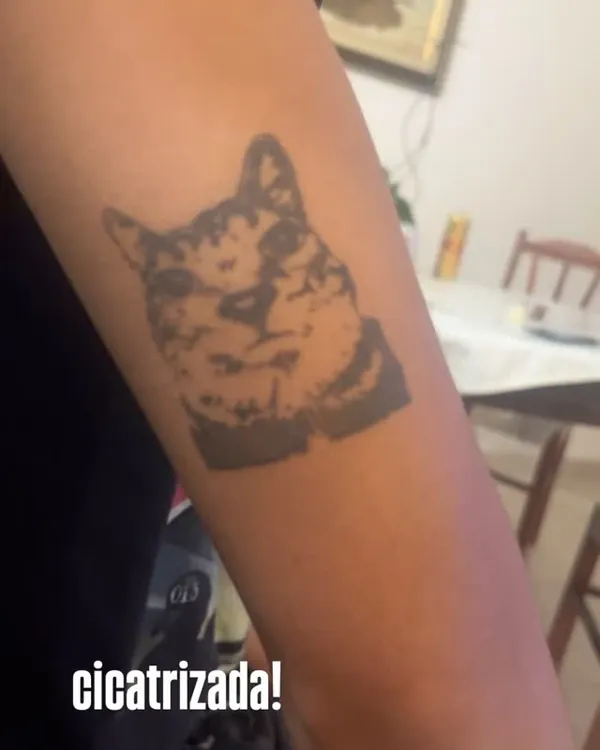
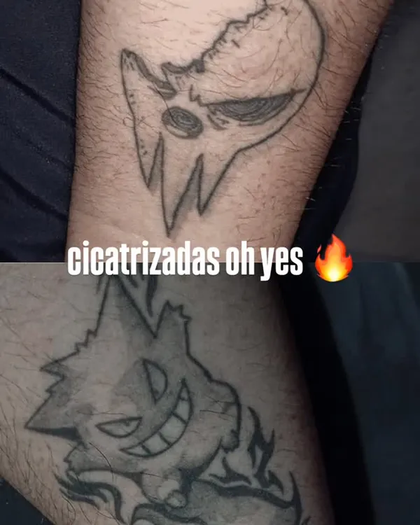
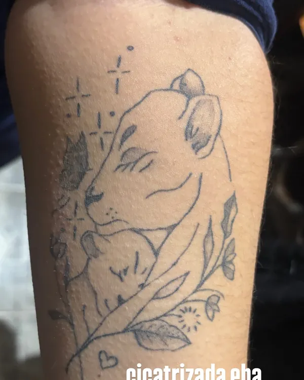
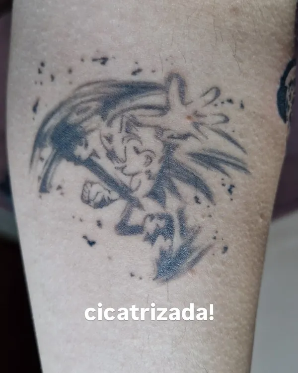
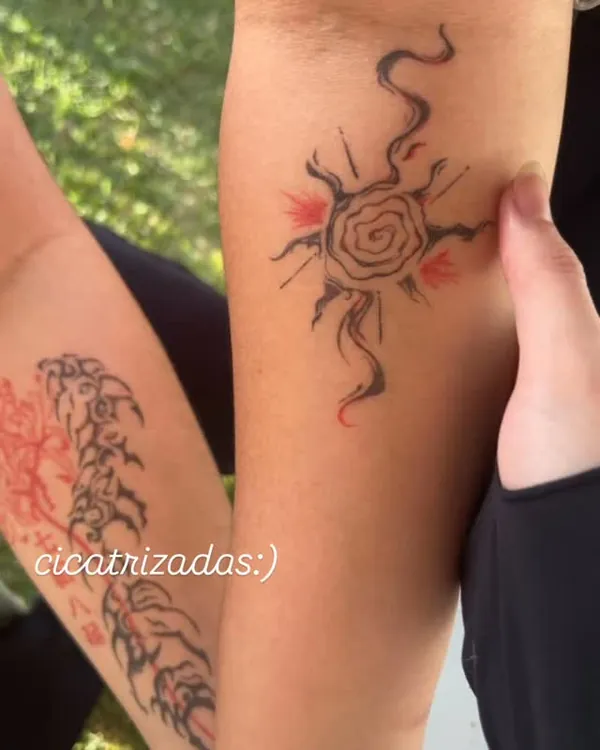
“Tatuem com a @kiu.tatu, ela deixa sua mão mt legal.”
@guelemk, cybertribal na mão
Tudo pela DM do Instagram. Sem formulário, sem robô.
Referência, tamanho em centímetros e o lugar do corpo. Pode ser personagem, sigilo ou algo só seu.
A Kiu responde com o orçamento e o que dá pra fazer no desenho.
Em Itapetininga ou nas datas abertas em São Paulo.
O desenho vai pra pele só depois que você aprovar o decalque.
Sim. Boa parte do portfólio é versão autoral de personagens, como o Luffy e o Espreitador, e sigilos desenhados pra cada pessoa.
Faz. Já teve cobertura colorida e retoque de tattoo antiga. Manda foto da tattoo atual na DM.
Em datas marcadas, divulgadas nos stories. A próxima é 19 e 20 de novembro.
Faz. Brilhinhos, estrelas, morceguinhos e nomes também estão no portfólio.
Kiu, ou Kiuzinha.
A primeira tattoo saiu em outubro de 2024, em São José dos Campos. Depois vieram Sorocaba e Itapetininga, onde ela atende hoje, com viagens marcadas pra São Paulo.
Muito do que ela tatua vem do que joga e assiste. Ordem Paranormal é a favorita, mas também sai Hollow Knight, JoJo, Soul Eater, Pokémon e Club Penguin. Do outro lado estão o cybersigilismo e o tribal, quase sempre em preto, às vezes com vermelho.
seja legal
O endereço exato vai pela DM depois do agendamento.
Atendimento durante todo o mês, com horário combinado pela DM.
Próximas datas: 19 e 20 de novembro. Vagas limitadas, reserva pela DM.